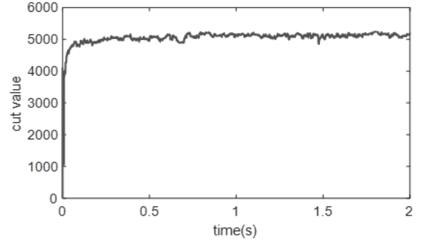

|
Seongwon (Gabriel) Yoon I completed my degree from Seoul National University with B.S. in materials science in engineering, Summa Cum laude, ranked 4th in class of 2022. I worked as a software engineer at Imagoworks Inc., a KIST spinoff deep learning company, where I was involved in the compilation of quality data and fine-tuning of generative models. From 2019 to present, I am working under the guidance of Mr. Masatoshi Ishii (IBM Research-Tokyo) and Prof. Sangbum Kim (Seoul National University) as a student researcher for neuromorphic chip hardware-aware simulator development and solve combinatorial optimization problems under the IBM-SNU Joint-Study Agreement. From the summer of 2023, I am working under the guidance of Prof. Hyung-Min Lee (Korea University) and Prof. Sangbum Kim (Seoul National University) for on-chip training of IGZO TFT capacitor-based synapse array. From Fall 2024, I am a Georgia Tech ECE Ph.D. student in Prof. Shimeng Yu's Laboratory for Emerging Devices and Circuits . I am currently involved in in-pixel circuit design of CMOS image sensor. |

|
ResearchMy research interests include software-hardware co-design for neuro-inspired computing and AI hardware design, with a particular focus on training and inference accelerators. Publications |
|
Thermal Tuning Overhead in Wafer-Scale Optical Interconnects for LLM MoE Training: A Cross-Layer Analysis and Ferroelectric-Based Mitigation
Seongwon Yoon, Pin-Jun Chen, Shimeng Yu arXiv preprint arXiv:2608.24637, 2026. |
|
CMOS+X: Stacking Memories based on Oxide Transistors upon GPGPU Platforms
Faaiq Waqar, Ming-Yen Lee, Seongwon Yoon, Seongkwang Lim, Shimeng Yu Proceedings of the International Symposium on Memory Systems (MEMSYS), pp. 64–77, 2025. |
|
A CMOS Image Sensor Pixel Readout Circuit Design Using Back-End-of-Line (BEOL)-Compatible Oxide Transistors
Seongwon Yoon, Janak Sharda, Omkar Phadke, Shimeng Yu IEEE 68th International Midwest Symposium on Circuits and Systems (MWSCAS), pp. 1026–1030, 2025. |
|
 |
Solving Max-Cut Problem Using Spiking Boltzmann Machine Based on Neuromorphic Hardware with Phase Change Memory
Yu Gyeong Kang, Masatoshi Ishii, Jaeweon Park, Uicheol Shin, Suyeon Jang, Seongwon Yoon, Mingi Kim, Atsuya Okazaki, Megumi Ito, Akiyo Nomura, Kohji Hosokawa, Matthew BrightSky, Sangbum Kim Advanced Science, vol. 11, no. 46, 2406433, 2024. Max-Cut problem solver using the IBM neuromorphic chip (phase-change material GST based non-volatile memory synapse) hardware-aware simulator. |

|
Clinical Validity and Precision of Deep Learning-Based Cone-Beam Computed Tomography Automatic Landmarking Algorithm
Jungeun Park, Seongwon Yoon, Hannah Kim, Youngjun Kim, Uilyong Lee, Hyungseog Yu Imaging Science in Dentistry, vol. 54, no. 3, pp. 240–250, 2024. Evaluated the clinical validity and accuracy of a deep learning-based CBCT automatic landmarking algorithm by comparing 3D head measurements from manual and automatic landmarking. This study further developed into the business solution CT Landmark Detection. |

|
Solving Constraint Satisfaction Problem with Spiking Neural Network based on 1.4M 6T2R PCM Synaptic Array with 1.6K Stochastic LIF Neurons Neuromorphic Hardware
Seongwon Yoon, Uicheol Shin, Sangbum Kim The 28th Korean Conference on Semiconductors (KCS), 2021. Traveling Salesman Problem (TSP) solver based on the IBM neuromorphic chip (phase-change material GST based non-volatile memory synapse) hardware-aware simulator. [code] |
SkillsPhotonic & Electromagnetic Simulation: Ansys Lumerical FDTD, Ansys Lumerical MODE Scientific Computing: MATLAB |
Graduate CourseworkCourses taken at Georgia Tech. Networking
VLSI & Semiconductor Devices
Computer Architecture & ML Systems
Machine Learning & AI
|
|
Design and source code from Jon Barron Website. |